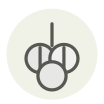

Nasturtium capers ✦
Câpres de capucine
| Latin name | Tropaeolum majus |
|---|---|
| Family | Condiments & ferments |
| Origin | Andean gardens, by way of Europe |
| Season (France) | July – September |
| Flavour | Peppery · Pungent · Tangy · Green |
| Typical price (France) | 80–150 €/kg |
What it is
The nasturtium came out of the Andes as an ornamental, and its heat is not capsaicin but glucotropaeolin, from the same family of mustard-oil compounds that powers horseradish and wasabi. Cooks pickled the green pods as a caper substitute because the plant grew where the caper bush would not — English kitchen books call them poor man's capers.
In the kitchen
Pick the pods while they still dent under a fingernail; once they yellow the seed hardens and turns floury, and no brine will bring it back. Salt them overnight before the vinegar goes on, or they stay hollow and squeak between the teeth.
Goes with
Butter Egg Potato Smoked salmon Crème fraîche Dill Cucumber Lemon
Same species
In season alongside
Picodon Rocket Watercress Water pepper (tade / benitade) Crottin de Chavignol Garlic chives
Something wrong here, or missing? Tell us